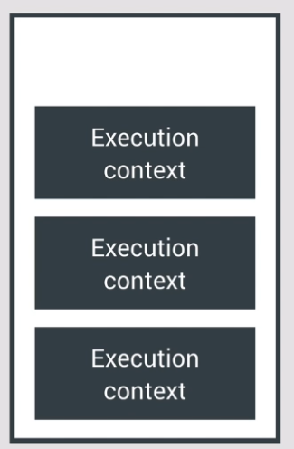
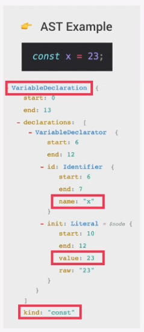
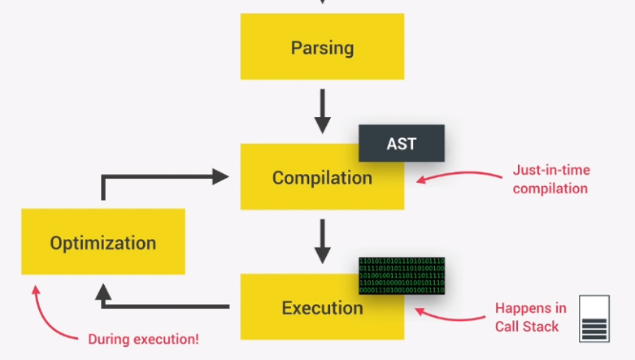
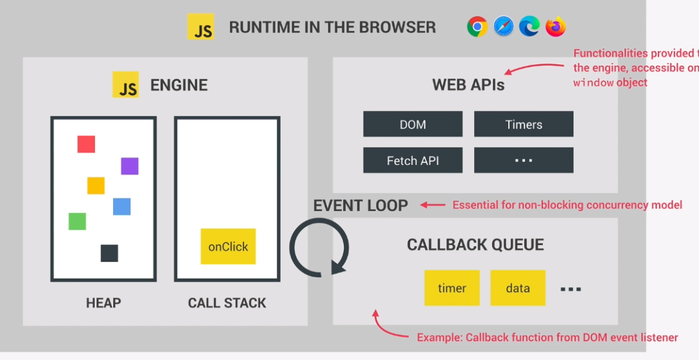
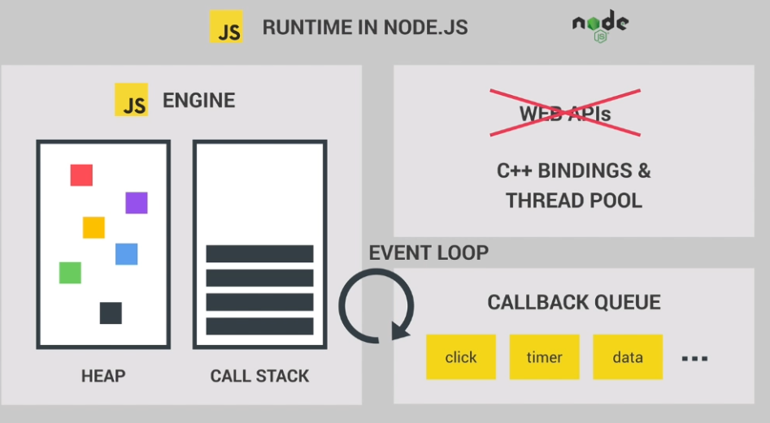

A JS engine is a program that executes JS code.
Every browser has their own engine.
The most popular is Google Chrome's V8 engine. This also powers Node.js.
Every JS engine contains a Call Stack and a Heap.
The Call Stack is where your code is executed using 'Execution context'. It's the place were execution contexts get stacked on top of each other, to keep track of where we are in the execution.
The Heap is an unstructured memory pool that stores all objects your application needs.
As your code enters the engine, it it first Parsed (read).
It is parsed into a data structure called the Abstract Syntax Tree (AST).
This takes the generated AST and compiles it into machine code.
JavaScript uses JIT compilation.
This machine code is executed immediately.
This happens in the Call Stack.
During Execution, the code is also being optimized and re-complied.
The Runtime is a container of everything needed to to run JS.
The heart of a Runtime is the JS Engine.
The other part is Web APIs. These are functionalities provided to the engine that are not part of the language.
JS gets access to these APIs through the global Window Object.
Also contains a Callback Queue. This is a data structure that contains all the callback functions ready to be executed. (like an event handler click function)
When the Call Stack is empty, the event is passed into it. This is called the Event Loop.
A Node.js Runtime is similar except it does not have access to Web APIs. So it uses C++ bindings and a thread pool instead.
